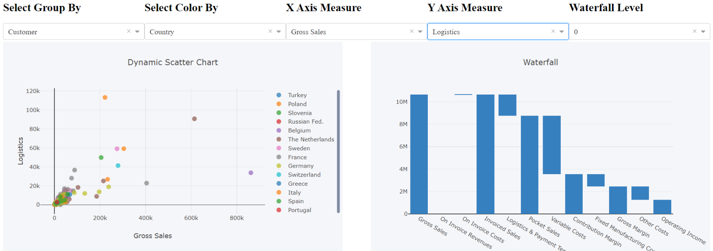
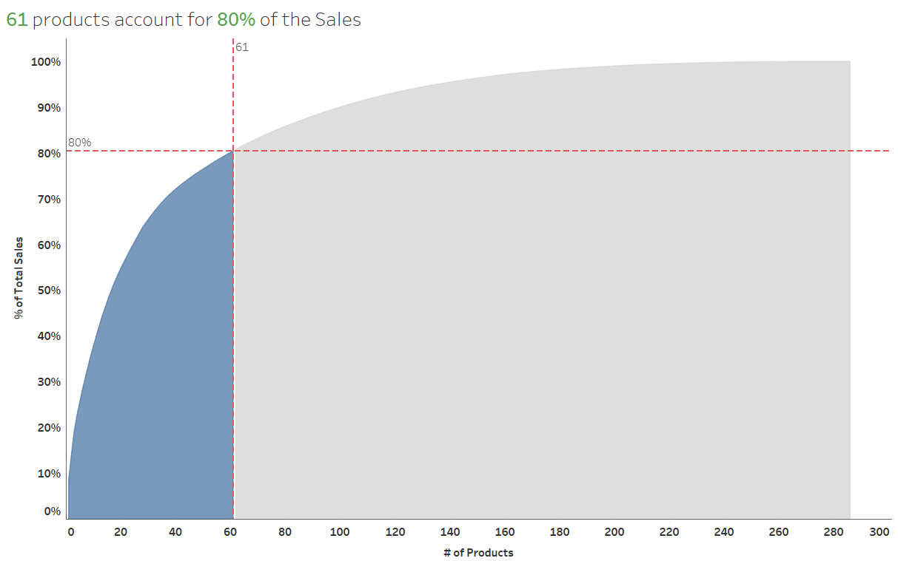

Passionate Business & Data Science Analyst actively looking an internship role for summer 2020. Consultant with 4 years of work experience in Customer and Product Analysis, KPI design, developed business intelligence solutions for clients using Data Analysis and Visualization.
Developed and implemented automated system to generate analytical reports to optimize resources which helped in reducing ~25% process time.
Managed a team of ~5 analyst to develop Customer Interface Module which helped the business in reducing the process time and closely coordinated with Senior Experts, Engagement Managers and Partners.
Performed root cause analysis to identify gaps in the data integration process which generated target business insights for clients and proposed solutions to improve system efficiencies resulting in 500k revenue generation.
Developed statistical model to develop an understanding of network coverage and boost the coverage and capacity of radio towers and antenna by ~15%.
GPA: 3.871/4.0
GPA: 3.66/4.0
Deep data exploration by cleaning, exploring and visualizing with respect to cost, location and type of room on the New York Airbnb 2019 dataset. Used Python libraries such as Pandas, NumPy and Seaborn library for visualization.
Source code in Python can be found here
Data visualization of movie by different demographics and genre and made predictive models to recommend movies which the audience may like to watch. Methods used - Data Analysis using python(Pandas, Sklearn), Seaborn library for graphics.
Source code in Python can be found here
Implemented a college database management system which include student, course, professor, books, class schedule, fees. Created the entity relation diagram, functional dependency and created tables and inserted data and SQL queries to find the insights of data
Source code in R can be found here
The project matches the candidate’s profile with the job description. The project aims to provide a matching score between two documents (resume and job description), using natural language processing techniques.
Source tableau workbook can be found here
In my free time I like to play Soccer and Cricket.
Also I like to collect stamps.